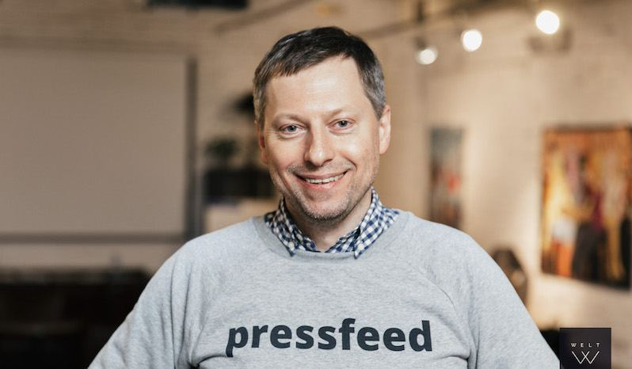
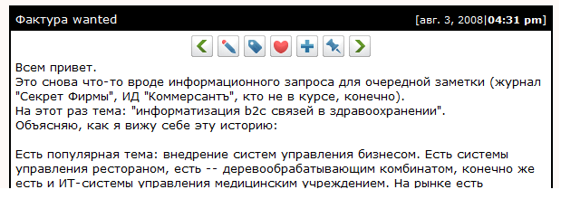
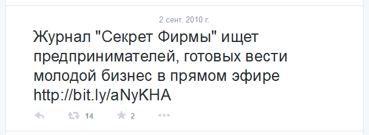
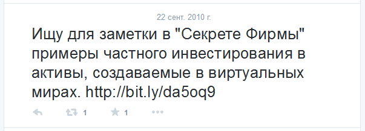
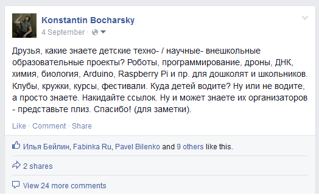

<section class="pf-section pf-section-first">
    <div class="container">
        <div class="row justify-content-center">
            <div class="col-lg-7">

                <p class="t-s pf-text-uppercase text-gray-light-2">История</p>
                <h1 class="t-l mb-4">Как появился Pressfeed и&nbsp;что он&nbsp;изменил в&nbsp;работе
                    с&nbsp;медиа и&nbsp;экспертами</h1>

                


                <p>Здравствуйте.</p>

                <p>Меня зовут Константин Бочарский.</p>

                <p>Еще недавно я&nbsp;работал редактором в&nbsp;ИД&nbsp;&laquo;Коммерсантъ&raquo; и&nbsp;сделал <a
                        href="https://pressfeed.ru/"
                        target="_blank">Pressfeed</a>, чтобы
                    помочь себе и&nbsp;своим коллегам искать фактуру для заметок. </p>

                <p>Тогда, три года назад, я&nbsp;не&nbsp;умел программировать, считал себя гуманитарием и&nbsp;не&nbsp;думал,
                    что стану
                    создателем онлайн-платформы, которая совершит революцию на&nbsp;рынке медиа и&nbsp;пиара.</p>

                <p>Сегодня Pressfeed используют почти половина всех российских редакций и&nbsp;около 40&nbsp;000&nbsp;компаний.
                    За&nbsp;3
                    года через Pressfeed в&nbsp;СМИ отправлено 120 тысяч экспертных комментариев, организовано более 35&nbsp;000
                    публикаций.</p>

                <p>В&nbsp;январе этого года один из&nbsp;ведущих американских журналов о&nbsp;PR назвал Pressfeed
                    &laquo;самым заметным
                    проектом журналистских запросов в&nbsp;мире после глобального лидера&raquo;. </p>

                <p>Но&nbsp;до&nbsp;того как все это произошло, я&nbsp;сидел в&nbsp;редакции журнала &laquo;Секрет Фирмы&raquo;
                    на&nbsp;улице Врубеля, где
                    располагался &laquo;Коммесантъ&raquo;, писал заметки и&nbsp;не&nbsp;понимал, почему в&nbsp;моей
                    вроде&nbsp;бы творческой и&nbsp;неплохо
                    оплачиваемой работе так много рутины. </p>

                <p>Чтобы найти интересных героев, истории, данные, я&nbsp;рассылал десятки писем, звонил в&nbsp;компании
                    и&nbsp;задавал
                    одни и&nbsp;те&nbsp;же вопросы, объяснял одни и&nbsp;те&nbsp;же вещи&nbsp;&mdash; про что я&nbsp;пишу,
                    что мне нужно, когда, в&nbsp;каком
                    виде и&nbsp;от&nbsp;кого. Вел одинаковые разговоры и&nbsp;думал о&nbsp;том, как&nbsp;бы все это
                    сократить и&nbsp;упростить. Чтобы
                    я&nbsp;занимался действительно важными и&nbsp;интересными вещами, а&nbsp;рутину отдать на&nbsp;откуп
                    автоматике.</p>


                <p>Однако стоило закинуть вопрос о&nbsp;поиске эксперта, истории, кейса в&nbsp;соцсети, они тут&nbsp;же
                    приносили
                    интересные отклики.
                </p>

                <p>Вот как я&nbsp;делал это, например, в&nbsp;ЖЖ:</p>


                <p>
                    
                </p>


                <p>Вот так пару лет спустя в&nbsp;Twitter:</p>

                
                <br><br>
                

                <br><br>
                <p>Вот так недавно в&nbsp;Facebook:</p>

                
                <br><br>
                
                <br><br>


                <p>Такие запросы давали отличный результат. На&nbsp;них откликались только&nbsp;те, кому действительно
                    было что
                    рассказать. По&nbsp;ответам было сразу видно, с&nbsp;кем мне стоит иметь дело, а&nbsp;с&nbsp;кем
                    нет. И&nbsp;вместо часов, а
                    порой и&nbsp;дней на&nbsp;поиски, переписки и&nbsp;разговоры, я&nbsp;тратил буквально несколько
                    минут на&nbsp;публикацию
                    запроса и&nbsp;просмотр откликов.</p>

                <p>Тогда я&nbsp;и&nbsp;создал Pressfeed, чтобы сэкономить себе и&nbsp;коллегам время на&nbsp;сбор
                    фактуры: публикуешь
                    запрос, получаешь отклики, выбираешь подходящие, берешь в&nbsp;работу. Красота!</p>

                <p>Но&nbsp;самым интересным оказалось&nbsp;то, что Pressfeed стал манной небесной для пиарщиков и&nbsp;отличным
                    инструментом бесплатного продвижения бизнеса. До появления Pressfeed публикации в СМИ были сложной
                    «ручной» работой, они требовали участия профессиональных пиарщиков. Pressfeed сделал
                    продвижение в
                    СМИ простым и&nbsp;понятным делом для любого предпринимателя и&nbsp;маркетолога без опыта работы с
                    прессой.</p>


                <p>И&nbsp;вот что писали про Pressfeed восторженные первые пользователи:</p>


                <p class="py-3">
                    
                </p>


                <p>Сегодня с&nbsp;помощью Pressfeed, отвечая на&nbsp;запросы журналистов, эксперты могут давать
                    комментарии СМИ,
                    предлагать свои продукты для тестов и&nbsp;обзоров, а&nbsp;офисы и&nbsp;кафе&nbsp;&mdash; в&nbsp;качестве
                    локаций для съемок. И
                    бесплатно получать публикации в&nbsp;прессе, которые приводят клиентов и&nbsp;генерируют
                    продажи.</p>

                <p>Работа под запрос оказалась невероятно результативной. Средняя конверсия на&nbsp;сервисе (отношение
                    публикаций к&nbsp;предложенным на&nbsp;запрос комментариям)&nbsp;&mdash; составляет 52%. Это значит
                    что в&nbsp;среднем каждый
                    второй отклик на&nbsp;запрос журналиста оказывается успешным. Такова сама природа работы &laquo;под
                    запрос&raquo; -
                    ты
                    предлагаешь журналисту&nbsp;то, что ему конкретно надо в&nbsp;данный момент.</p>

                <p>Мы постоянно развиваем функционал. Сегодня на Pressfeed можно искать экспертов и журналистов во
                    внушительной базе данных и связываться с ними напрямую.. Можно публиковать релизы, которые
                    журналисты
                    увидят в&nbsp;своих личных кабинетах&nbsp;&mdash; это самый эффективный способ распространения
                    новостей. Можно
                    общаться
                    напрямую с&nbsp;журналистами и&nbsp;экспертами во&nbsp;внутренних чатах.</p>

                <p>И&nbsp;количество журналистов и&nbsp;экспертов, использующих сервис постоянно растет.</p>

                <p>Если у&nbsp;вас есть пожелания, советы, или критика&nbsp;&mdash; напишите нам: info@pressfeed.ru</p>

                <p>До&nbsp;связи! И&nbsp;успешной работы с&nbsp;Pressfeed.</p>

                <p>Рад знакомству,<br>
                    Константин.</p>


            </div>
        </div>
    </div>
</section>


